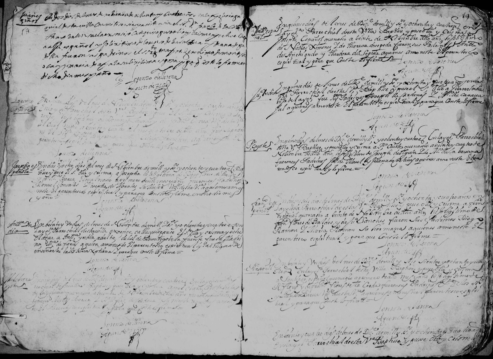

← Volver al Archivo Central
Expediente Histórico: 6

Manuscrito Original (Clic para ampliar)
Transcripción Paleográfica
Perfil: Bautismo de Francisco
Descripción: Fragmento de acta de bautismo de un niño llamado Francisco, fechada el 23 de febrero de 1780.
Transcripción:
En veinte y tres dias del mes de febrero
del año de mil setecientos ochenta
Yo el Pe. Ex [...]
Bauptice solemnemente [...]
puse por nombre Franco [...]